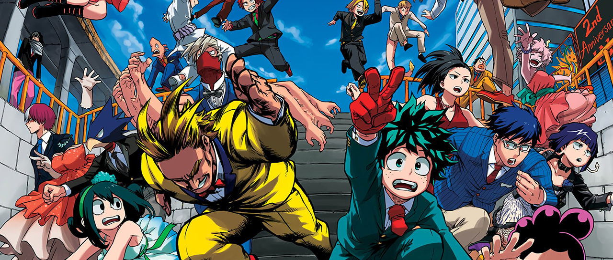

TSUYU ASUI
Quirk: Rana
Cumpleaños: 12 de febrero
Alias: Froppy
Asui es una chica atrevida y simpática que hace buenas migas rápidamente con todos sus compañeros de clase por su humor sarcástico y su habilidad de decir siempre lo que está pensando. Su habilidad es hacr todo lo que hace una rana, incluyendo estirar su lengua hasta varios metros de distancia.
Tsuyu es una persona sencilla y relajada que siempre habla directamente de su mente y de lo que piensa de los demás. Tsuyu prefiere ser llamada "Tsu", pero solo por personas que ve como amigos. Ella comúnmente se refiere a todos con el honorífico "-chan", a excepción de los maestros y otras figuras de autoridad.
Tsuyu es una chica baja de complexión relativamente delgada, en comparación con sus compañeros de clase, que tiene manos especialmente grandes. Su apariencia es bastante parecida a la de una rana; tiene una boca muy ancha, que se hunde un poco en el medio como la de una rana común, y ojos ovalados con grandes iris negros, sus pestañas inferiores visiblemente pronunciadas, y también muestra algunos gestos parecidos a las ranas, como saltar en cuatro patas en lugar de correr, y sostenerse de una manera que es algo connotativa de una rana. Su cabello es de un color verde marino oscuro, y es muy largo, llegando hasta la cintura, con las puntas atadas juntas en la parte inferior en un moño. Tiene dos bultos que le llegan hasta los hombros enmarcando su rostro y flequillo más corto entre los ojos, algunos de ellos parcialmente barridos a cada lado
MIX DE PERSONAJES
MIX DE PERSONAJES |
||||
|---|---|---|---|---|
TENYA IIDA |
FUMIKAGE TOKOYAMI |
KOJI KODA |
MINA ASHIDO |
|
Lida es el hermano menor de un héroe registrado llamado Ingenium, que cuenta con una habilidad similar a la de él. Es un muchacho extremadamente aplicado e inteligente, pero a veces demasiado cuadrado en su manera de pensar, lo que lo hace muy estricto y "poco divertido". Su habilidad especial hereditaria le otorga un motor interno en las piernas, ubicado justamente en sus pantorrillas que le permiten andar con mucha velocidad y, para utilizarlo como arma, dar patadas muy fuertes. |
Tokoyami es un joven con la estética de un cuervo, que tiene la habilidad de hacer que su sombra, que tiene mente propia y es inteligente, ataque a sus enemigos y lo proteja. Esta habilidad, sin embargo, depende de la luz del día, puesto que durante la mañana, es fácil de controlar, pero durante la noche, la sombra se sale de control y se le dificulta enormemente acatar órdenes. |
Koji es un joven dulce, tímido y tranquilo que no habla mucho. No obstante, hay una razón para ello, y se debe a que su habilidad consiste en hablar y controlar a los animales, dándoles órdenes sin importar qué tipo de animal sea, incluyendo insectos. Tiene un conejo de mascota. |
Mina es una joven simpática, tranquila y graciosa que rápidamente se transforma en una de las más sociables de la clase 1-A. Es atlética pero no le gusta estudiar y parte de su personalidad es ser una romántica empedernida. Su habilidad le permite expedir de su cuerpo un material corrosivo, parecido al ácido común. Además, puede controlar su cantidad, solubilidad y viscosidad. Esta habilidad además le permite escalar y desplazarse con rapidez si lo utiliza para deslizarse por el suelo. |
|
KYOKA JIRO Kyoka parece una persona poco entusiasta y fría, pero se preocupa mucho por sus compañeros y amistades más cercanas. Su relación más interesante es con Denki Kaminari, a quien fastidia constantemente. Su habilidad consiste en que, de sus oídos, cuelgan un par de cables de audífono de entrada de audio mendiante los cuales puede atacar, pues puede estirarlos a gusto, y también puede utilizarlos para medir frecuencias a través de paredes y escuchar conversaciones dentro de habitaciones cerradas. |
||||
MINORU MINETA
Mineta es un personaje altamente desagradable por el hecho de que es un acosador insufrible hacia las chicas, haciendo siempre comentarios subidos de tono e innecesarios hacia ellas. Es un personaje cobarde, impulsivo y carente de vergüenza. Su habilidad consiste en que, las bolas que tiene en la cabeza que parecen cabello, se pueden despegar de ella y ser utilizadas como arma, debido a que tienen un peso y se pueden mantener pegadas al enemigo por 24 horas. Estas bolas pueden adherirse a cualquier cosa, excepto a él mismo. También las puede utilizar para escalar. Minoru es muy pequeño, siendo de menor estatura que la mayoría de otros personajes. Tiene una enorme cabeza con grandes ojos y su cabello asemeja un racimo de uvas.
Su traje de héroe es muy simple. Tiene una máscara y camisa púrpura, una capa amarilla, guantes y botas del mismo color, y una especie de pañal metálico alrededor de su cintura.
Pop Off: El Don de Minoru hace que pueda desprender las bolas de su cabeza y lanzarlas, estas esferas pueden adherirse a cualquier cosa menos a él mismo. Según él, estas bolas quedarán pegadas por un máximo de 24 horas en caso de que su condición física esté bien (por ejemplo, si lleva una buena alimentación). Estas esferas se regeneran por sí solas, pero si arranca muchas en poco tiempo, empezará a sangrar. |
||||
TOSHINORI YAGI
Es el antiguo símbolo de la paz y héroe número uno, un personaje sin igual que se dedicó durante toda su carrera a acabar con el crimen organizado. También ejerce un papel como profesor en la academia U.A. para el curso de héroes. Es el responsable tras la habilidad que hereda Deku, pues fue él quien tomó la decisión de entregarle One for All. |
||||
YUGA AOYAMA
Yuga es un joven gracioso pero cobarde. Poco a poco va superando sus miedos, pero tiende a esconderse durante las batallas. Su habilidad consiste en un láser que le sale del ombligo, que si lo utiliza por demasiado tiempo, tiende a darle dolores de estómago. |
||||